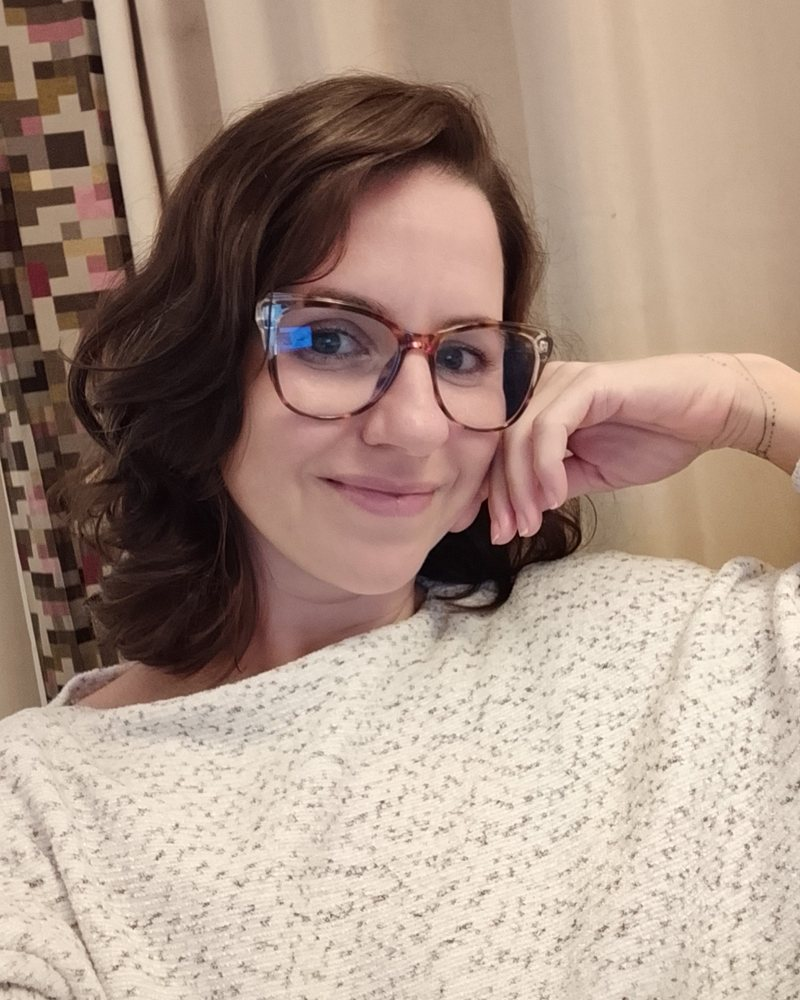

Sobre Maria Cristina
Uma travessia junto ao humano

Maria Cristina de Resende é psicóloga clínica com formação em Psicologia Integrativa, especializada em Psicologia Junguiana e em Saúde da Mulher e Psicologia. Além disso, possui formações em Arteterapia e Terapia Ayurvédica (Medicina Tradicional Indiana).
Seu trabalho nasce da confluência entre suas formações técnicas, sua extensa experiência clínica em consultório e em trabalhos em grupos terapêuticos, e sua jornada pessoal de descoberta do humano em si, da maternidade, da relação com o outro, com o mundo e com a natureza.
Uma metodologia com uma escuta que honra a totalidade da pessoa, seus ciclos, seus desafios e seu potencial criativo.
Mestra, pesquisadora pelo HCTE/UFRJ, onde aprofundou academicamente os impactos dos Círculos de Mulheres em suas participantes, trazendo para o estudo científico seu objeto de trabalho clínico ao longo de quase 20 anos.
Hoje, vem ampliando seu trabalho clínico, de estudo, pesquisa e desenvolvimento profissional também na realidade da Inteligência Artificial, trazendo o assunto para o aprimoramento do profissional da psicologia, assim como reflexões e condutas no uso da IA dentro do cuidado com a saúde mental.
“O cuidado não é uma técnica. É uma presença. É a disposição de estar inteiro com quem está diante de você.”
— Maria Cristina de Resende- Psicóloga CRP 05/38554
- Mestra pela UFRJ
- Psicologia clínica com abordagem integrativa
- Círculos de Mulheres facilitando espaços de escuta, aprendizado e crescimento coletivo
- IA: novos modelos de relação com a tecnologia para o profissional da psicologia e para o cuidado com a saúde mental
Vamos conversar?
A primeira conversa é uma entrevista inicial para nos conhecermos.